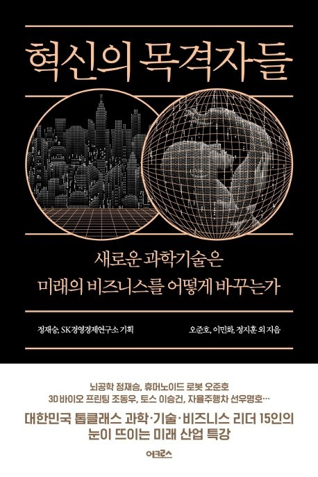
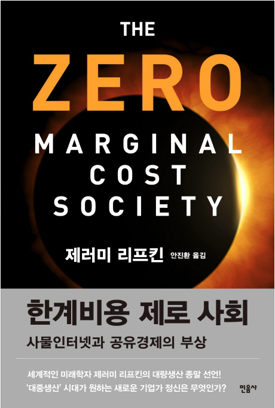

‘혁신의 목격자들 / 정재승, SK경영경제연구소, 오준호 외 4명’
전세계 사람들은 지금 누구도 예상하지 못한 사태를 겪고 있다. 코로나 라는 질병이 전세계를 패닉상황으로 몰아 넣었다. 학생들은 학교에 갈 수 없었고 마스크를 쓰지않고는 문앞에 나가지 못하는 누구나 처음 겪어 보는 일들로 가득하다. 나 조차도 시시각각 변하는 상황에 늘 신경을 곤두세우고 지켜본다.
그러다 코로나 진단키트를 가장 먼저 개발한 씨젠이라는 회사에 대해 알게 되었고 그 회사의 시스템에 놀랄 수 밖에 없었다. 씨젠은 분자진단 방법을 사용하는 키트를 개발하는 회사인데 분자 진단 키트를 AI디지털 시스템 방식을 사용하고 있었다. 자동화된 플랫폼과 솔루션으로 가장 빨리 가장 정확한 진단키트를 개발하고 있었다.
‘혁신의 목격자들’은 우리에게 ‘알쓸신잡’으로 유명한 정재승 박사와 SK경영경제연구원의 합작 기획으로 4명의 교수가 각각 자신의 전문분야에 대해서 이야기 한다. 전문인들이 연구하고 구상하는 곧 다가올 차세대IT와 그 미래상에 대해서 재미있는 질문으로 화두를 던진다. ‘우리 회사에 인공지능 신입사원이 들어온다면’, ‘우리는 어떤 로봇으로 함께할 것인가’ 등 많은 사람들이 각자의 주제에 대해 논하는 작은 책 안에 담긴 나를 위한 IT세미나 같은 느낌이다.
내가 주목한 몇개의 주제는 ‘인간과 인공지능이 소통하려면’ 이라는 주제였다. 인공 신경망 알고리즘은 우리에게 필요하고 우리가 원하는 것을 자신의 데이터를 통해서 가장 적합한 결과물을 제공하고 사람들은 이를 바탕으로 더욱 편리한 서비스를 제공받고 있다.
인공지능의 이해를 바탕으로 알아두어야 하는 것은 그렇다면 인공지능과 사용자, 즉 사람간의 소통을 어떻게 이루어져야 바람직한지에 대한 문제다. 책에서 제공하는 내용은 사물인터넷을 그 해답으로 말한다. 우리가 직접적으로 명령어를 입력하고, 분석한 데이터를 학습의 데이터셋과 대조시키도록 제공해야 하는 것이 아니라 여러 상황과 다양한 정보들이 인공지능의 데이터로 반영이 되며 이를 바탕으로 적절한 결과물들이 우리 일상에서 서비스 되어야 한다.
여기서 해당 부분의 작자인 정지훈 박사는 진짜 문제는 딥러닝으로 얻은 결과물은 통계처럼 검증하기 어렵다고 한다. 실제로 인공지능 의사에 의협은 강경한 반대의 내용을 표명했다. 때문에 관련 법안들이 본회의에서 상정되지 못하고 있어 뉴 헬스케어 관련 국내 기술과 개발진으로 이루어진 스타트업 기업들의 상당수가 지난 10년간 일본, 유럽, 미국 등지로 빠져나가고 있다. 정작 IT강대국을 꿈꾸는 대한민국은 규제와 의협의 반대로 이루어지지 못하고 있다.
정지훈 박사는 돌파구에 대해 2가지가 있다고 서술하는데, 첫째는 인공지능이 사람의 능력을 비교할 수 없을 정도로 뛰어나거나, 인간과의 적절한 상호작용을 하는 방식으로 이른바 부드러운 개입인 ‘넛지’를 잘 활용해야 한다고 했다. 인공지능은 이미 인간의 결과물에 의심하고 검토해 잘못된 부분을 지적하는 단계에 이르렀다. 따라서 인공지능 의사에 대한 부드러운 개입은 의사를 대체하는 것이 아니라 의사의 진단과 처치, 치료 과정에서 검토하고 잘못된 판단을 수정하기 위해 상호작용하는 형태의 과정이 이루어져야 한다고 덧붙였다.
책을 통해서 느낀 것은 앞으로 인공지능의 발전으로 인해 질병의 진단, 신약의 개발, 치료 등의 일련의 과정이 빨라질 것이라는 점이다. 이번 인공지능을 활용한 코로나 진단키트 역시 발전된 의료기술이 필요한 분야에 적절히 쓰여진 부분이라고 생각하며, 앞으로 IT기술의 발전은 단순히 거의 모든 분야의 발전을 촉진시킬 것이다.
해당 주제 뿐만 아니라 책의 전반적인 내용을 통해서 IT기술에 발전은 의료, 산업, 서비스 등을 막론하고 거의 모든 분야에 서비스 품질대비 유통비용을 낮출 것이라는 암시를 통해 나는 제러미 러프킨의 ‘한계비용 제로 사회’에 대한 내용을 떠올렸다. 만일 IT기술과 의료계의 발전 및 협력을 통해 유전병과 암에 관한 부분도 재화적 • 시간적 • 공간적 제약을 없애고 모두가 질 높은 그리고 여러 데이터를 통해 발병 초기에 선제적으로 대응할 수 있는 의료 시스템을 갖출 수 있다면 더이상 불치병 혹은 난치병이라는 이유 하에 고통을 받는 사람들을 더욱 줄일 수 있을 것이라고 생각한다.
기술의 발전은 의료시스템이 낙후된 지역의 의료공백을 메울 수도 있고 어렵게 느끼던 신약개발분야에 비약적인 발전이 이루어질 수 있도록 해야 할 것이다.

코로나 이슈로 인해 전격적으로 대부분의 산업에서 비대면화가 이루어지면서 우리는 문 정부가 얘기하는 ‘위드 코로나’ 사회로 접어든지 이제 반년이 지났다. 코로나는 우리의 삶과 사회를 단 몇 달 만에 바꾸어 놓았다. 대면이 주된 인간관계에 매개체였던 것이 지금은 대부분이 비대면, 온라인화 되었다. 그 덕분에 기존에는 활용할 수 있으면서도 여러 규제와 필요성에 대한 물음으로 크게 필요성을 느끼지 못했던 새로운 기술들이 매우 빠른 속도로 우리의 삶의 여러 부분에 들어오게 되었다.
많은 기업과 학교, 학원 등 모임을 해야 하는 여러 집단에서는 비대면 소프트웨어를 사용하여 그룹회의를 진행한다. 관련해서 가장 많이 쓰이고 있는 ‘ZOOM’ 화상회의 소프트웨어의 주가는 지난달 31일부터 이달(9월) 1일 사이 단 하루만에 40.78%가 뛰었다. 생활 양식 역시 마찬가지다. 대부분이 배달음식과 온라인 쇼핑을 통해서 ‘식’, ‘주’를 해결하면서 관련 매장의 매출은 떨어졌으며, 반대로 ‘배달의 민족’을 운영하는 ‘우아한 형제들’에 따르면 지난달 30일부터 이달 1일까지 주문건수가 그 전주에 비해 7% 증가했다. 특히 ‘우아한 형제들’은 “수도권 재확산 및 거리두기 2.5단계 실시로 인해 대형 프렌차이즈 음식점 및 카페 내 음식섭취가 금지되면서 주문건수는 30% 이상 증가했다”고 밝혔다.
또 다른 이슈는 ‘코로나 우울’과 관련된 이슈가 있다. 이진한 동아 인터넷 닷컴 의학전문기자에 따르면 “코로나 사태 장기화에 따른 사회적거리두기 등으로 사람들의 상태가 악화되고 있다. 전문가들은 코로나19 뿐만 아니라 역대 가장 길었던 장마 기간과 경기침체까지 겹치며 고립감과 경제적 압박이 심화돼 ‘코로나 우울’이 확산되고 있다고 진단한다”고 밝혔다. 그러면서 “이탈리아에선 코로나 19에 감염됐다가 회복된 402명을 한달간 추적 조사했더니 이 중 28%가 외상후스트레스장애(PTSD)를 겪고 있는 것으로 나타냈다. 31%는 우울 증세를 보였고 불안감을 호소한 경우도 42%나 됐다.”고 서술했다. 현재 코로나로 인해 여러 피해가 발생하고 있는 심각한 상황이다.
코로나로 인해서 여러 분야에 많은 변화가 있었다. 최근 백화점에서 주변 1.5KM 반경안에 있는 거주민에 한해서 백화점에서 대신해서 장을 보고 배달해 주는 서비스를 시작했다. 뿐만 아니라 주변 이웃 배달 서비스라고 해서 지역 거주민들이 퇴근길에 집에 가는 도중 물건을 수거해 그 대가를 받는 형식의 공유경제 또한 최근의 트렌드로 떠오르고 있다.
지난 대구확산 이후로 거리두기가 실시가 반년 이상이 지났다. 최근 2단계로 다시 격상되었고, 여러 외신과 전문 연구원들은 내년 말을 종식으로 예상하고 있는 상황에서 코로나 확산과 더불어 코로나로 인한 우울증에 대한 문제가 발생하고 있다.
석정호 강남세브란스병원 정신건강의학과 교수에 따르면 “코로나 19 사태가 장기화하면서 감염 스트레스로 인한 우울감을 호소하는 사람이 증가하고 있다. 사회적 거리두기로 외출 및 사회활동이 줄어들면서 스트레스가 해소되지 못하고 우울감이 더 깊어지는 악순환이 이어지며, ‘코로나 우울’의 고통을 호소하는 사람들을 위한 ‘심리적 방역’이 필요하다.” 고 밝혔다. 또한 “코로나 우울은 다양한 증상으로 나타날 수 있으며, 코로나19 사태처럼 장기적인 스트레스는 2차적인 정서불안을 유도해 더 심한 신체증상을 유발할 수 있다.”고 했다. 석정호 교수는 “코로나 19 사태처럼 장기적인 스트레스는 2차적인 정서불안을 유도해 더 심한 신체증상을 유발할 수 있다.”며 그 위험성을 재차 강조했다.
코로나 19로 인해서 관련 정신질환이 급증하고, 그 해결도 어려운 상황에 우리는 어떻게 상황을 극복해야 할까, 이 질문에 나는 비대면 수업의 경험을 떠올리며 온라인, 비대면화한 정신상담 시스템을 구축할 필요성을 느낀다. 최근 여러 학회와 국회 기자 간담회 등이 온라인으로 열리는 장면을 뉴스나 몇몇 보도자료에서 본 경험이 있을 것이다. 뿐만 아니라 청와대와 정부 기관에서는 외신과 외교회의 등도 화상으로 진행하는 추세다. 현재 원격 의료 서비스에 대해서는 금지되어 있는 사항이지만, 경증 정신질환과 관련해 온라인 비대면화가 이루어 진다면, 관련 문제를 해결할 방안이 될 수 있다고 생각한다.
경증 정신질환에서 치료로 이용되는 상담심리학에 관해 간단히 살펴본다. 상담심리학(Counseling Pshychology)에서 상담은 도움을 필요로 하는 사람(내담자)이 전문적 훈련을 받은 사람(상담자)과의 대면관계에서 생활 과제의 해결과 사고, 행동 및 감정적 측면의 인간적 성장을 위해 노력하는 과정을 말한다. 그 중 치료와 관련해서는 발달상담치료가 있는데 이는 내담자에 대한 공감과 이해를 바탕으로 긍정적인 변화를 만들어 가도록 도와주어야 한다는 접근방법이다.
이러한 일련의 과정들은 심리 치료 혹은 심리 상담이 필요한 내담자를 파악하고 필요한 조치와 진단을 내리는 효과가 있는데, 사실 몇몇의 경우 이 과정 만으로도 내담자 본인이 대화 과정에서 갖고 있는 문제를 스스로 극복하고 치료되는 경우가 있다는 것이다. 따라서 우울감과 관련된 경증 질환에서는 쉽고 빠르게 이를 극복해 사회와 내가 속해 있는 일상에 정상적으로 다시 복귀할 수 있도록 장려해야 한다. 최근 코로나 문제로 인해서 상담 치료와 관련해 경증 정신질환자들에 대한 조치가 쉽게 이루지지 않는 것은 사실이다. 뿐만 아니라 여러 진단 시스템을 통해서 자신의 문제를 파악하더라도 상담치료를 받기는 꺼려지는 상황이다.
나는 이에 의료계와 정부에서 현 상황과 같은 비상상황을 고려해 몇몇 의료부문, 특히 지속적인 관리와 상담으로 이루어지는 분야에 있어서 발전된 의료공학과 정보통신기술을 활용한 원격 진료에 대해서 검토해야 한다고 생각한다. 관련 규제를 완화하고 현재 ‘코로나 우울’ 과 관련해서 문제를 겪고 있는 사람들이 쉽게 문제를 해결할 수 있도록 해야 한다고 생각한다. 비대면 의료 서비스는 코로나 상황에서도 환자들이 시간과 공간의 장소의 제약을 허물고 쉽게 서비스 받을 수 있게 되는데 이 장점은 코로나를 넘어 우리에게 앞으로 더욱 많은 부분에서 이득을 안겨준다.
올해 초 ‘한국지능정보시스템학회’가 이번 코로나 사태로 인해서 온라인으로 개최된 적이 있다. 이번 학회에서 가장 큰 특징은 시간과 공간의 제약 없이 저렴한 비용으로 학회가 개최되었으며, 반대로 학회에 참여하는 사람들이 더욱 다양하고 많아졌다는 것인데 그 이유는 기존의 학회에서는 존재했던 참가비가 사라졌기 때문이다. 특히 관련 학과의 많은 대학생들이 참여하게 되면서 학회에 대해서 많은 긍정적인 평가를 남겼다. 그리고 이러한 현상은 비대면 온라인화 된 상담 치료에서는 더욱 극대화될 것으로 생각한다. 상담치료에 대해서는 2가지에 큰 문제가 있다.
첫번째는 비용 그 다음은 접근성이다. 상담치료의 경우 그 치료의 목적에 맞게 공간과 시간이 필요하고, 질 높은 치료가 요구되는 만큼 고급 인력을 충당하다 보니 사설 기관에서는 치료 비용이 다른 치료들보다 높고 보험도 지원이 되지 않는다. 반대로 저렴한 가격으로 치료를 받을 수 있는 국립건강복지센터의 경우 접근성이 매우 떨어지는 경향이 있다. 우리 지역의 용인시립건강복지센터의 경우 용인시에는 기흥구에 1곳이 위치해 있으며, 신봉고를 기준으로 교통수단을 이용해도 접근하기 쉽지 않기 때문에 치료에 대해 고민이 되는 경우 포기할 가능성이 매우 높다. 때문에 두가지 문제를 해결하고자 나는 그 해답을 최근의 온라인 비대면화 서비스와 제레미 리프킨의 ‘한계비용 제로사회’에서 찾았다.
온라인 비대면화 의료 서비스는 근본적으로 의료 비용에 발생하는 기본 자원의 투입 비용을 줄이는 것으로서 실제 원가를 절감할 뿐 아니라 그 치료를 위해 투자해야 하는 여러 재화와 가치들 또한 줄어든다. 이를테면 치료에 대한 비용이 발생할 때는 치료비 뿐만 아니라 내담자와 상담자가 서로 시간을 소비해야 하고, 뿐만 아니라 상담자는 그 장소를 마련하고 제공하는데 드는 비용, 내담자는 그 장소까지 찾아갔다가 돌아오는 비용과 시간 등, 여러 부수적인 요인들도 투입되어 상담이 구성되는 것인데, 같은 예시로 ‘한계비용제로사회’ 에서 리프킨은 개방형 온라인 강좌와 이를 한계비용 제로 교육에 관한 설명으로 같은 설계비용을 없애는 새로운 경제 구조에 대해서 설명했다.
나는 러프킨의 한계비용 경제 구조와 의료 복지가 함께 융합된다면, 현재 의료 공백과 의료 복지 소외로 문제를 안고 있는 의료 하류층에 해당하는 이들이 문제를 해결할 수 있을 것이라고 생각한다. 또한 온라인 비대면화로 의료 공백을 없앨 수 있음은 의료계 정원확대가 아니어도 의료공백 문제와 접근성 문제에 대해 새로운 해결책을 모색함으로써 현재 의료계와 정부간의 갈등에 대해서 새로운 대안점이 될 수 있을 것이라는 생각을 했다.
현재 ‘코로나 우울’과 관련한 문제는 교과서의 ‘스트레스와 문제 대처 방법’ 부분에서 찾아볼 수 있었다. 생활 변화와 비대면 온라인화 된 주거 직장환경은 정신적인 피로감과 스트레스를 더욱 유발하게 되었다. 또한 역대 최장기간 소나기와 태풍 등의 사회에서 들려오는 경제와 관련한 우울한 소식들은 재난적 사건적인 요건에 의해 우리를 더욱 압박하는 것일지 모른다.
물론 개개인의 노력으로 현재의 재난상황과 앞으로 코로나 이슈로 인해서 닥쳐올 여러 후폭풍은 더욱 많은 경증 정신질환 문제를 가져올 것으로 예상한다. 특히 우리나라는 OECD자살률 부동의 1위라는 불명예를 안고 있으며, 특히 1997년-1998년 많은 실업자와 경제 위기가 닥친 후에는 가장 많은 자살 사망자 수가 발생했다.
많은 전문가들은 경제 지표에 대해 코로나 이후 많은 경제 전반 지표들이 드러나게 될 것이고, 많은 실업자들이 긴 기간동안 복귀하기 어려운 것으로 전망한다. 여러 상황을 살펴보면 앞으로도 우리나라의 자살률은 한동안 나아지지 않을 것이며 반대로 더 많은 정신질환자들이 발생할 위기에 놓여있다는 것이다. 발전된 기술이 어떻게 의료계에서 활용되는지를 비대면화 의료 서비스를 통해 이번 위기에 보여줄 필요가 있다고 생각한다.